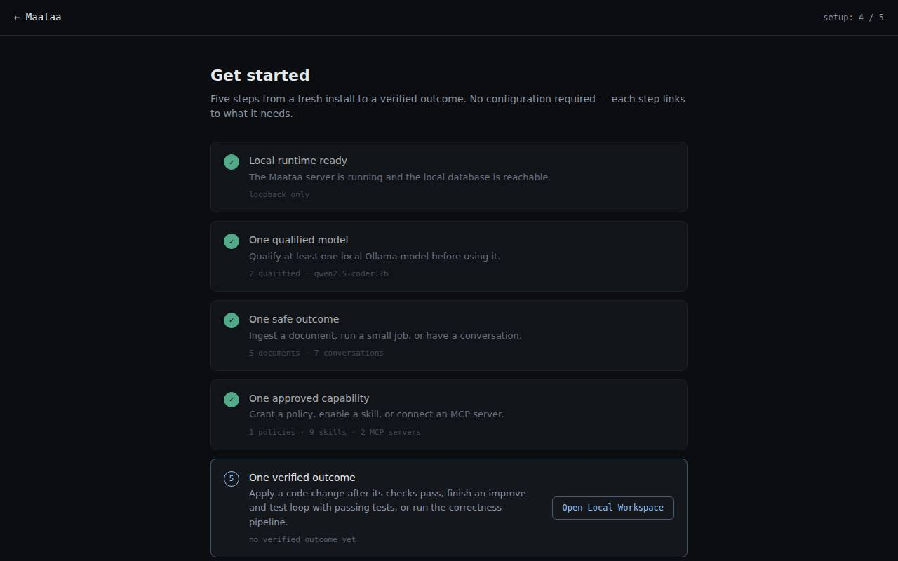

The setup checklist
The "setup" pill in the top bar counts five steps from a fresh install to work NOVA has checked. Click it to see what is left and where to do it.
The setup pill in the top bar (for example setup: 3 / 5) shows how far this computer has come. Click it to open Get started, which lists the five steps. Each step that is not done yet has a button that takes you to the screen where you do it.

The five steps
| Step | Done when | Where to do it |
|---|---|---|
| 1. Local runtime ready | NOVA's server is running and its database opens. This is always done once you can see the page. | — |
| 2. One qualified model | At least one Ollama model has passed NOVA's coding checks | Models → Qualify for coding (Models) |
| 3. One safe outcome | You have had a conversation, indexed a document or finished a background job | Console, or Knowledge |
| 4. One approved capability | A skill is enabled, a tool server is connected, or a policy grant exists | Skills, or MCP Registry |
| 5. One verified outcome | A code change was applied after its checks passed, or an improve-and-test loop ended with passing tests | Local Workspace (Local Workspace) |
When all five are done, the page says Setup complete and links to the Console and Workbench.
Things to know
- The checklist only reads what is already in NOVA. It never changes anything, and you can ignore it: every screen works whether or not the steps are done.
- Step 2 matters if you want NOVA to plan code. Code plans and the improve-and-test loop only use models that passed the coding checks.
- A step counts things that really happened on this computer. The example records some screens start with do not count.